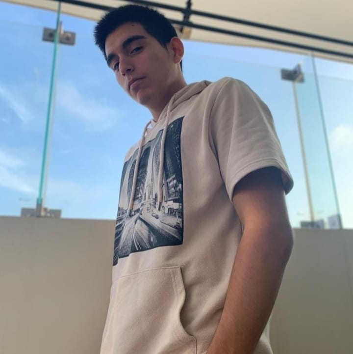

Estudiante de la carrera de PMD.
- Los invito a conocer mi página en Google Sites
- Podrás encontrar mi Bitácora Digital
- Dinámicas hechas en clase
|  | Sobre miTengo 23 años, soy fanático de los videojuegos y el teatro musical, me gusta mi carrera porque conozco lindas personas a lo largo del ciclo y me ayuda bastante en ampliar mis conocimientos para poder aplicarlos en mi emprendimiento. |
 |
Expectativas del cursoEn primer lugar me parece interesante el cómo crear una página web, porque monetiza bastante, y porque el proceso es un poco tedioso pero no difícil de hacer. |
 |
Acerca de mi grupoConozco a uno del grupo de hace 2 ciclos y es muy buena persona, tuve la oportunidad de conocer a las demás y también me han caído bien tengo muchas expectativas con este grupo en la cual vamos a hacer un buen trabajo. |